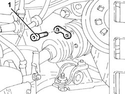
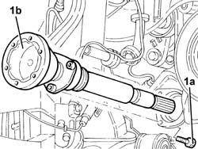
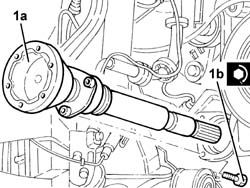
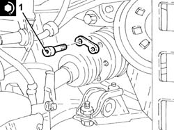

2710A31 intermediate drive shaft - r r
- Path
- Procedures > 27 AXLE > 2710 FRONT AXLE > 2710A drive shafts and joints > 2710A31 intermediate drive shaft - r r
- Kind
- repair procedure (removal / refitting; the operation number is the code)
- Applies to
- all engines; all production periods
- Interactive page
- https://sloeber94.github.io/elrnDB-a147/en/#/3025185
Applies to: all engines; all production periods
 Removing
Removing
 Refitting
RefittingPosition the vehicle on the ramp.
Proceed with removal 4450B04 right front wheel r r .
Proceed with the removal 7055B64 Engine compartment DUST shield in front wheel arch (one), left or right - R.R. (Right side).
Applies to: engines: 2.0 TS, 3.2 V6, 1.9 JTD 8V, 1.9 JTD 16V; all production periods
Proceed with removal 7055B54 under-engine guard - r r .
Applies to: engines: 2.0 TS, 3.2 V6, 1.9 JTD 8V, 1.9 JTD 16V; all production periods
Proceed with removal 4410A80 damper lower fork - r r .
1. Unscrew the bolts securing the right drive shaft to the intermediate drive shaft.

Applies to: engines: 2.0 TS, 3.2 V6, 1.9 JTD 8V, 1.9 JTD 16V; all production periods
1. Undo the bolts (1a) and remove the intermediate drive shaft (1b).
Remove the dust excluder.

Applies to: all engines; all production periods
Refitting
Removing1. Refit the intermediate drive shaft (1a) in its seating complete with dust excluder and tighten its bolts (1b) to the specified torque.
 | Fastening | Component | Ø | Value (daNm) |
|---|---|---|---|---|
1b | - | - | - | - |

Applies to: all engines; all production periods
1. Tighten the bolts securing the right drive shaft to the intermediate drive shaft to the specified torque.
| Fastening | Component | Ø | Value (daNm) |
|---|---|---|---|---|
1 | - | - | - | - |

Applies to: all engines; all production periods
Proceed with refitting 4410A80 damper lower fork - r r .
Applies to: engines: 2.0 TS, 3.2 V6, 1.9 JTD 8V, 1.9 JTD 16V; all production periods
Proceed with refitting 7055B54 under-engine guard - r r .
Applies to: engines: 2.0 TS, 3.2 V6, 1.9 JTD 8V, 1.9 JTD 16V; all production periods
Proceed with the refitting 7055B64 Engine compartment DUST shield in front wheel arch (one), left or right - R.R. (Right side).
Proceed with the refitting 4450B04 right front wheel r r (Right side).
Remove the car from the ramps.
Topics linked from this page (4)
- 4410A80 damper lower fork - r r
- 4450B04 right front wheel r r
- 7055B54 under-engine guard - r r
- 7055B64 Engine compartment DUST shield in front wheel arch (one), left or right - R.R.